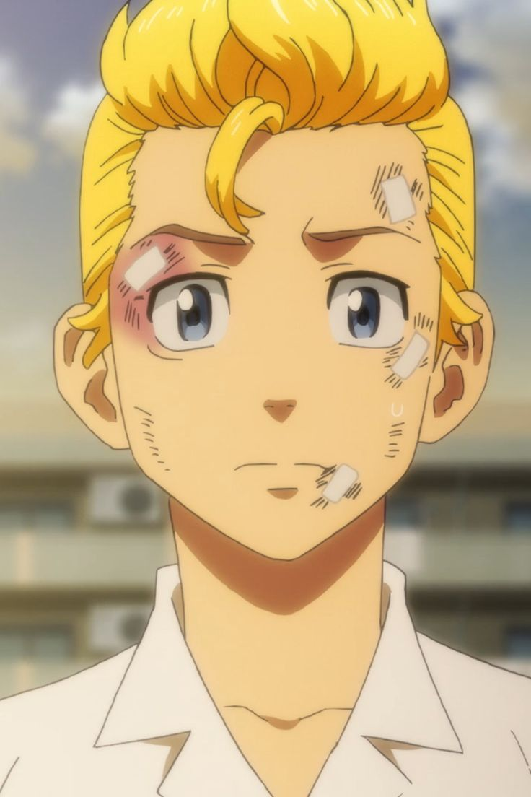
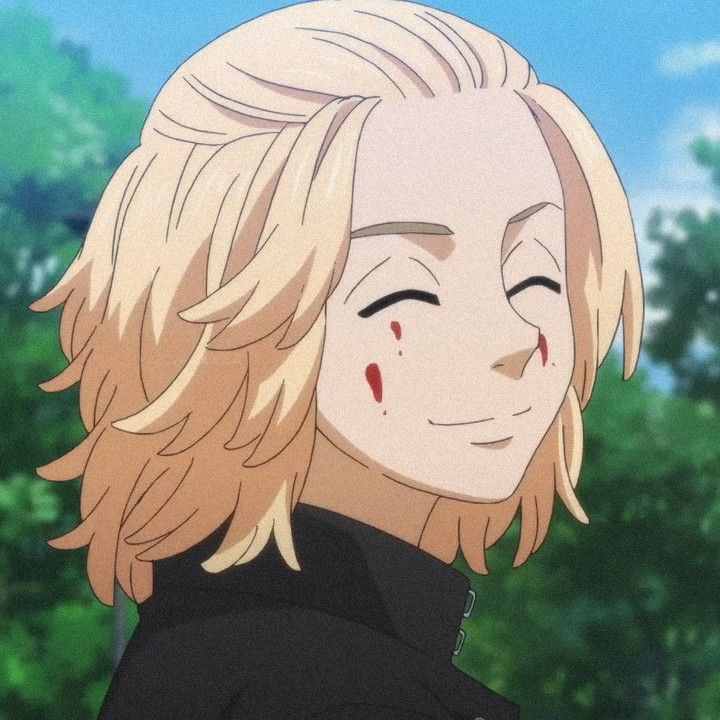
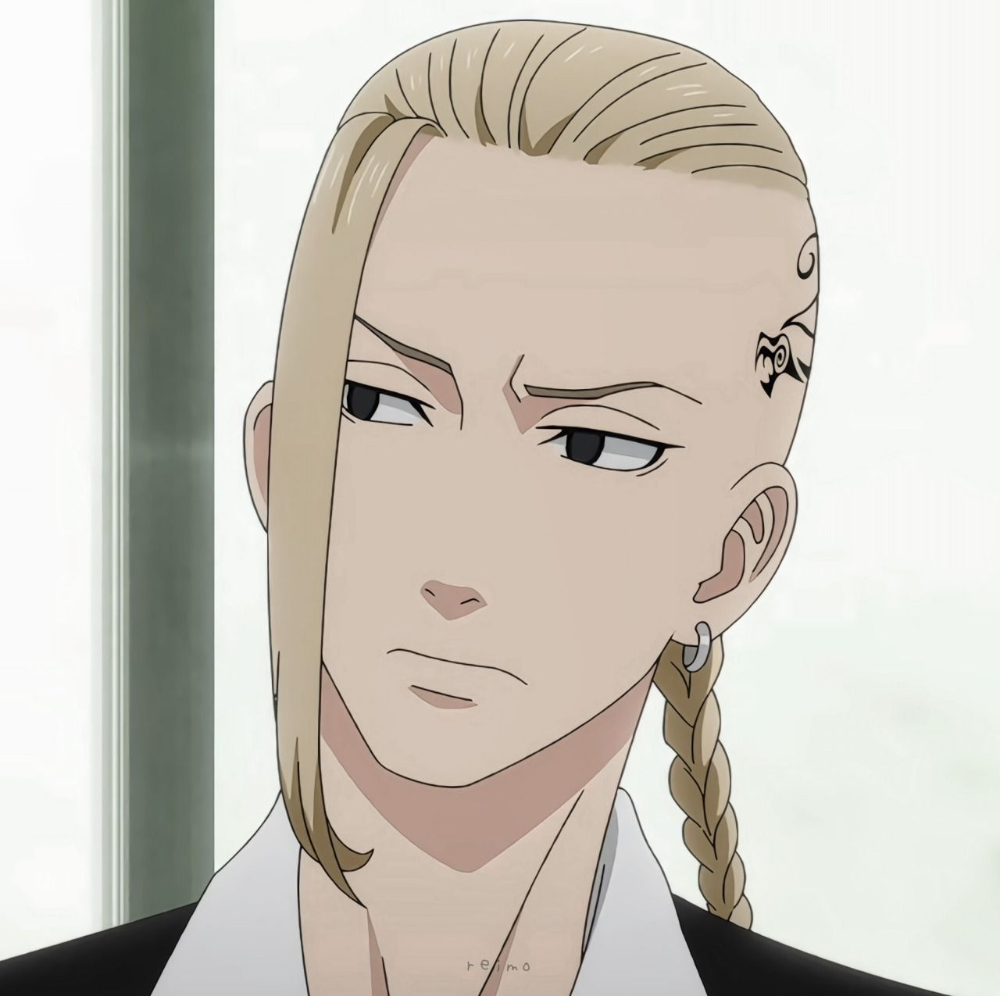
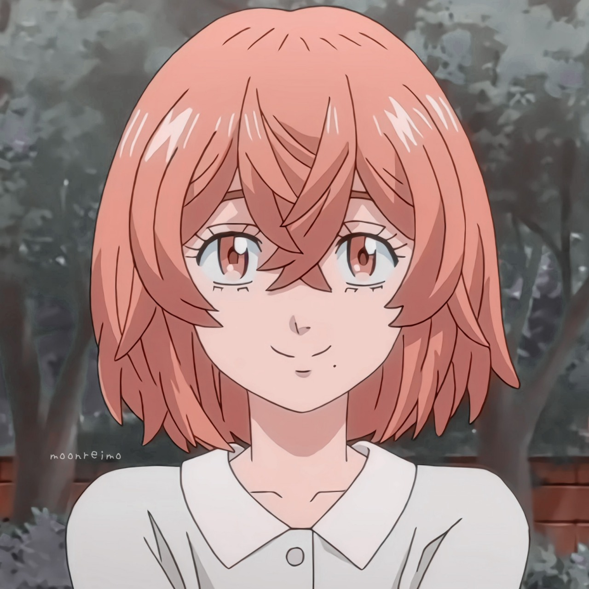
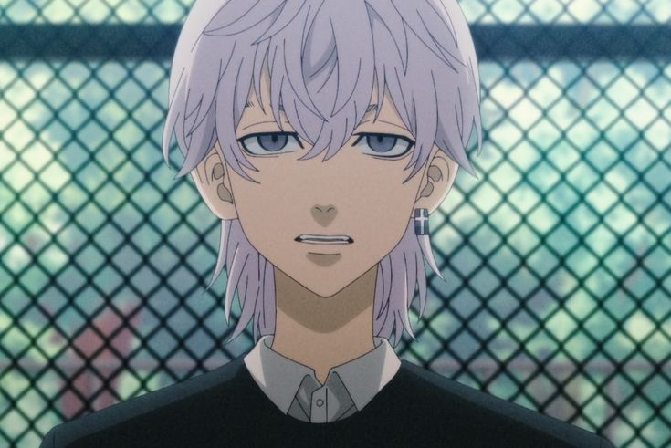

Takemichi Hanagaki
The protagonist who travels back in time to save Hinata and change the tragic fate of his
friends by
infiltrating and fighting within the Tokyo Manji Gang.

Manjiro "Mikey" Sano
The charismatic and powerful leader of the Tokyo Manji Gang known for his fighting skills
and complex
personality.

Ken "Draken" Ryuguji
Mikey's close friend and the vice-president of Toman, known for his tall stature,
loyalty, and strong sense of justice.

Hinata Tachibana
Takemichi’s kind-hearted middle school girlfriend whose tragic fate motivates him to
change history.

Takashi Mitsuya
Member of Tokyo Manji Gang's 2nd Division, a calm and dependable figure behind the scenes
and close ally to Mikey and Draken.